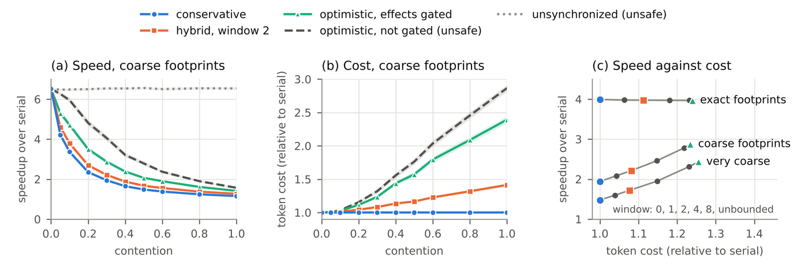
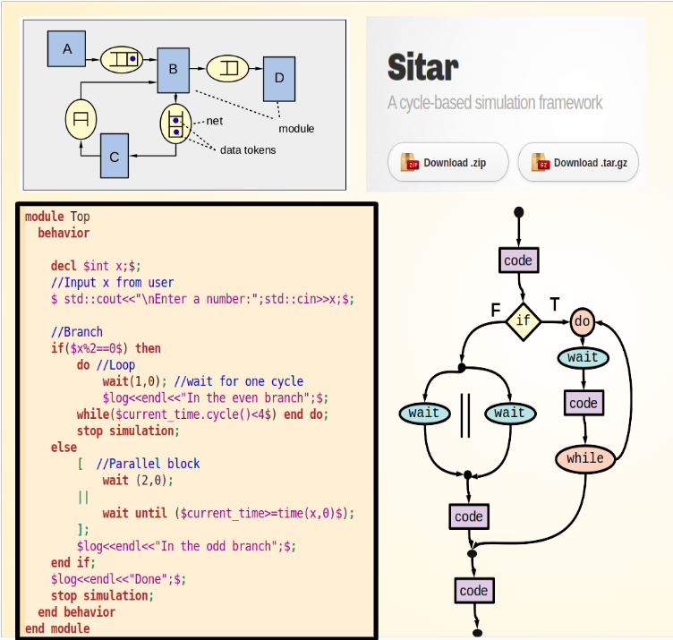
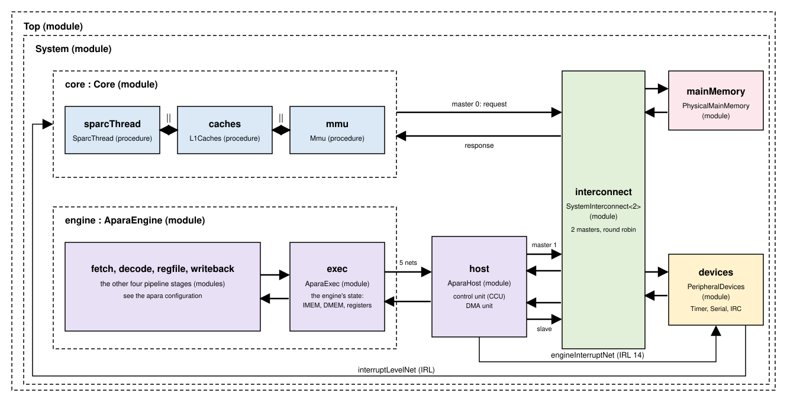
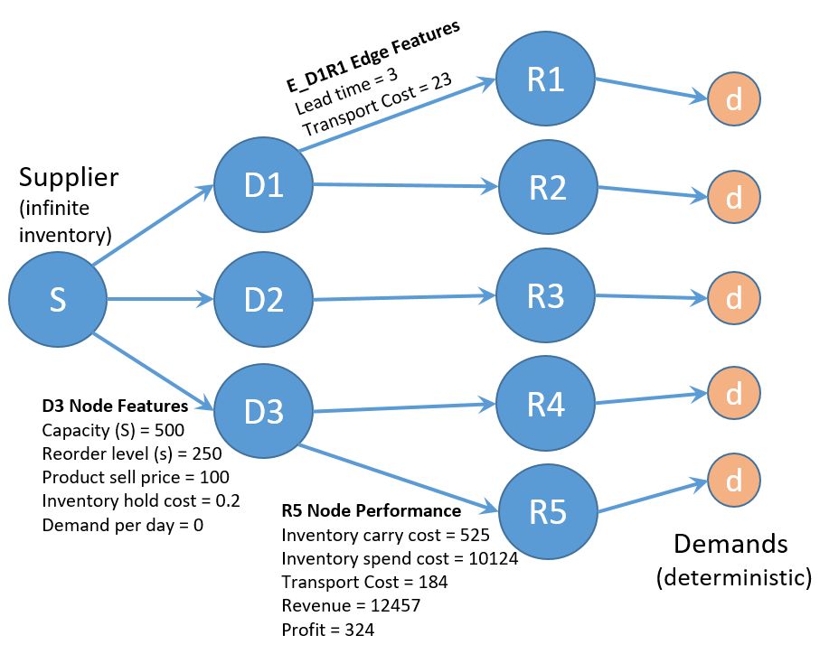
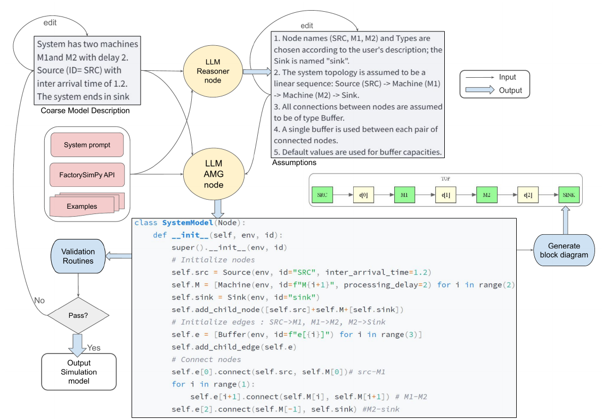

Research


My research is about discrete-event systems. I study how to model them, how to simulate them fast and in parallel, and how to use simulation to design and optimize them. My work advances approaches grounded in discrete-event systems and PDES theory. It has led to domain-specific modeling languages, tool-sets and open frameworks. These include Sitar (a cycle-based modeling framework and simulator, 2015), a repository of cycle-level multi-core and accelerator performance models built using Sitar (ongoing collaboration with IIT Bombay), a mixed discrete-continuous simulation framework for process modeling, SupplyNetPy (with Ph.D. student Tushar Lone) and FactoryFlow (with Ph.D. student Lekshmi P.). More recently, I have started building En-Masse, an open framework for synchronization of multi-agent AI systems that uses principles from PDES.
Current: Synchronization of Multi-Agent LLM Systems
En-Masse (Enabling Multi-Agent Synchronization-Space Exploration)
[GitHub]
Multi-agent LLM systems run many agents at once on shared state, such as files, databases, deployed services and agent messages. At every step, the synchronization strategy in the runtime or harness must decide whether an agent may act now, act speculatively, or wait. This choice determines speedup, token cost and correctness, and should ideally be driven by the properties of the workload. Yet existing runtimes and harnesses are each hard-wired to a single synchronization strategy.
Multiple agents sharing state closely parallel the execution threads in Parallel Discrete-Event Simulation (PDES), where decades of research have produced theory and synchronization policies ranging from conservative (block until provably safe) to optimistic (speculate, checkpoint and roll back). En-Masse aims to apply this body of work to multi-agent systems. It treats these strategies as points on a single design spectrum, with a policy-independent checker for causality and commit safety, and a simulator that predicts the speedup, token cost and safety violations of each policy for a given workflow before tokens are spent on live agents. Results and insights from PDES do not transfer directly, because agents differ from PDES simulation threads in their priorities and constraints. Agent actions have no natural timestamps, re-execution is nondeterministic, and some effects cannot be undone. Re-deriving the policies under these constraints is the core research problem. The current prototype implements six policies and reproduces the expected trade-offs on synthetic workloads. Work is ongoing towards a generalized runtime in which existing synchronization strategies are implemented as pluggable policies, ranging from conservative to optimistic, with systematic hooks for oversight and correctness checks. The simulator is an important component, and building calibrated models of workload classes is an ongoing effort.

Related: On Integrating Resilience and Human Oversight into LLM-Assisted Modeling Workflows (ACM SIGSIM PADS 2026).
Parallel Simulation Frameworks
Sitar: a framework for modeling and parallel simulation of synchronous discrete-event systems
[Project page and documentation]
[GitHub]
|
 |
Sitar is an open-source framework for modeling and parallel simulation of synchronous (clocked) discrete-event systems, such as computer architecture models, communication networks and discrete-time queueing networks. It consists of a modeling language and a lightweight C++ simulation kernel. Systems are described hierarchically as networks of concurrently running modules, whose behavior is written imperatively using time delays, conditional waits, fork-join concurrency and embedded C++. The kernel uses a two-phase, cycle-based execution scheme that permits efficient, race-free parallel execution on shared-memory machines, by imposing a mild and practically harmless restriction on how modules communicate. Its single-threaded performance is comparable to SystemC and better than SimPy, and multi-threaded runs (OpenMP) show near-linear scaling on several benchmarks. Sitar is developed with Prof. Madhav Desai (IIT Bombay). |
Papers:
Efficient Parallel Simulation of Networked Synchronous Discrete-Event Systems (WinterSim 2024)
Sitar: A Cycle-based Discrete-Event Simulation Framework for Architecture Exploration (SIMULTECH 2022, Best Paper Award)
Performance Modeling of Processors and Systems-on-Chip
Cycle-level models of SPARC V8 multi-core systems and accelerators (ongoing, with IIT Bombay)
[Documentation]
[GitHub]
Built using Sitar, this is a growing, systematically validated collection of executable models of SPARC V8 based systems. It ranges from a single core, through cores with the SPARC Reference MMU, split L1 caches and peripheral devices, to a four-core system with coherent caches, inter-processor interrupts, TLB shootdown and OpenMP support, and a system that couples the core with the APARA vector accelerator engine. Every configuration comes as a fast functional model and a cycle-timed model sharing the same C++ components, runs real SPARC programs in assembly or C, and is checked against a validation suite of hundreds of tests. The models also run in parallel on several host threads, with results identical to a serial run.
This is part of an ongoing project with IIT Bombay, whose goal is an efficiently parallelized simulation model of a many-core system-on-chip with multiple accelerator engines, for early software development and design-space exploration, alongside the hardware design work at IIT Bombay.

Background and earlier work:
Ajit processor (IIT Bombay, 2015-2016): functional and timing models of the memory subsystem (caches, MMU, TLB, memory interface) and device models for Ajit, an indigenous SPARC V8 processor, and the port of the Linux kernel to the Ajit platform.
Simulation-based design-space exploration (Ph.D. work): an embedding approach that converts integer-valued parameters of a simulation model (buffer sizes, number of servers, integer delays) into continuous ones by randomizing the model's behavior, giving an interpolation of long-run performance and letting continuous optimizers work directly over discrete design spaces. Applied to multi-core systems (MASCOTS 2015, arXiv) and to queueing networks, with Prof. Shalabh Bhatnagar at IISc (ESM 2018, arXiv, code).
Hybrid (Mixed Discrete-Continuous) Simulation
A Python framework for mixed discrete-continuous simulation (with Dr. Subodh Joshi, formerly at IIT Bombay, INRIA Bordeaux and IISc, currently Senior AI Engineer/FDE at Databricks)
Many systems that need digital twins, particularly in process industries, combine discrete-event processes with continuous ones. In this framework, continuous processes are loosely coupled to the rest of the system through well-defined events. A continuous state crossing a threshold can trigger an event, and an external event can change a continuous trajectory, its state or its boundary conditions. Time advancement is controlled by the event-stepped engine of SimPy, and continuous processes are modeled with existing solvers wrapped behind the events interface.
Papers:
A Python-based Mixed Discrete-Continuous Simulation Framework for Digital Twins (Springer LNNS, vol. 601)
Mixed Discrete-Continuous Simulation for Digital Twins (SIMULTECH 2021)
Supply Chain Networks: Simulation and Learned Surrogates
SupplyNetPy and graph neural network metamodels (with Ph.D. student Tushar Lone)
[SupplyNetPy documentation]
[GitHub]
[Dataset]
|
 |
Supply chains are discrete-event systems with a graph structure. Nodes represent entities that hold or process inventory (such as suppliers, manufacturers, distributors and retailers), and edges represent the flow and transport of inventory between them. For real-world supply chain networks, simulation is often the only practical way to analyze them, given their large scale, complex multi-echelon structure and stochastic behavior. SupplyNetPy is an open-source, documented Python library we have developed for modeling and simulating supply chain and inventory networks with arbitrary structure. A supply chain is described as a graph with node and link attributes. The library supports multiple replenishment policies, perishable inventory, node disruptions, and stochastic demand and lead times, and has been validated against analytical results, a commercial tool and a published case study. It is designed for programmatic model generation, which enables design-space exploration, what-if analysis and the generation of training data for fast surrogate models. Building on it, we study graph neural networks as metamodels. These are differentiable surrogates that generalize across network topologies as well as parameters. They open the way to fast design-space exploration and joint gradient-based optimization over both structure and parameters. We have released a large public dataset of programmatically generated supply chain graphs with their simulated steady-state performance. |
Papers:
SupplyNetPy: An Open-Source Python Library for High-Fidelity Modeling and Simulation of Arbitrary Supply Chain and Inventory Networks (WinterSim 2026)
On the Potential of Graph Neural Networks as Metamodels for Supply Chain Optimization: Dataset, Architectures, and Directions (WinterSim 2026)
An Open Tool-Set for Simulation, Design-Space Exploration and Optimization of Supply Chains and Inventory Problems (SIMULTECH 2023)
LLM-Assisted Model Generation for Digital Twins
FactoryFlow and FactorySimPy (with Ph.D. student Lekshmi P.)
[FactoryFlow on GitHub]
[FactorySimPy documentation]
[DataFITR tool]
The model behind a manufacturing digital twin is usually a stochastic discrete-event simulation, built by hand by modeling experts. FactoryFlow is an open-source framework that generates such models from coarse natural-language descriptions and sensor data, with an expert in the loop. It separates the two halves of the problem. The structure of the system is translated by an LLM into readable Python code that connects pre-validated, parameterized components from our FactorySimPy library, and is shown to the user as a block diagram for validation. Parameters are inferred continuously from data with expert-tunable controls, using DataFITR, our guided input-modeling tool. A key finding is that the intermediate representation must be density-preserving. Python, where a loop can describe a 100x100 grid of machines, keeps hallucination errors far lower than netlist-style formats that expand every component explicitly.

Papers:
On Integrating Resilience and Human Oversight into LLM-Assisted Modeling Workflows for Digital Twins (ACM SIGSIM PADS 2026)
Bridging Expertise and Automation: A Hybrid Approach to Automated Model Generation for Digital Twins of Manufacturing Systems (WinterSim 2025)
DataFITR: An Open, Guided Input Modeling Tool for Creating Simulation-Based Digital Twins (SIMULTECH 2023) [code]
Earlier work: a discrete-event digital twin of an SMT-PCB assembly line at RBCCPS, IISc, which showed that buffer insertion could cut the line's energy use 2.7x without significantly affecting throughput (IEEE IoTAIS 2018, code), and a SimPy-based testbed for at-scale simulation of smart-city IoT devices (IoTDI 2019).